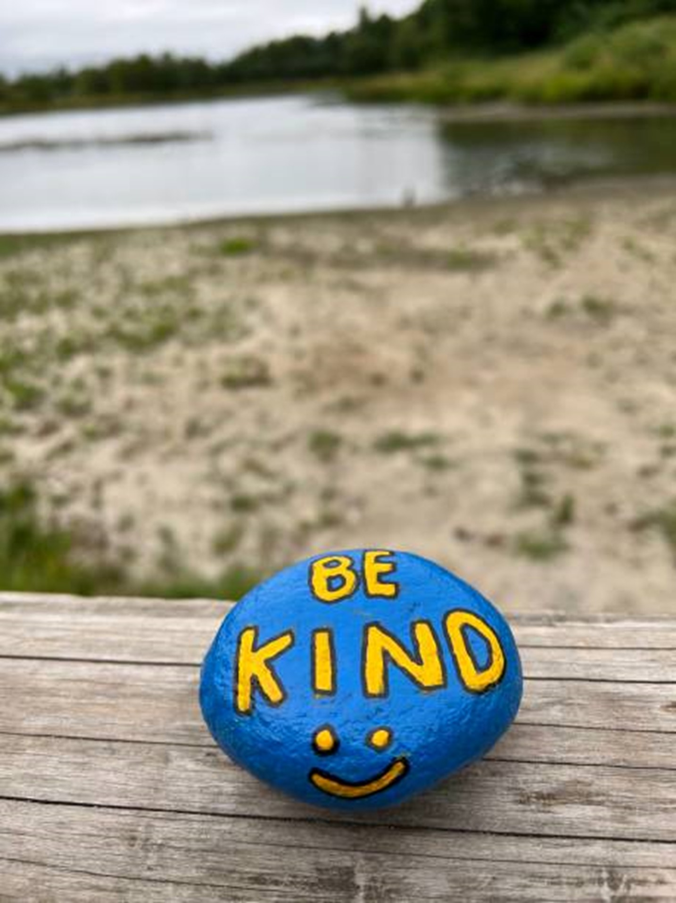

Kindness Matters

Spread Kindness

The Art of Being Kind

History

World Kindness Day, observed on November 13th, originated from the World Kindness Movement's 1998 conference in Tokyo, Japan. The conference brought together representatives from global kindness organizations to promote the values of compassion and empathy.
The World Kindness Movement, which emerged from this gathering, is dedicated to fostering kindness and encouraging individuals and communities to engage in acts of goodwill.
The day aims to highlight the profound impact that simple acts of kindness can have on society and to inspire people to make a positive difference in their communities. By celebrating World Kindness Day, people are reminded of the power of kindness to enhance social connections and improve lives, reinforcing the idea that compassion is a fundamental part of a harmonious society.
Ways to Celebrate World Kindness Day
Celebrating Kindness Day is an opportunity to foster goodwill and spread positivity through various meaningful actions. One of the simplest yet impactful ways to observe the day is by performing random acts of kindness. This can include paying for a stranger’s coffee, leaving encouraging notes in public places, or offering assistance to someone in need. Such spontaneous gestures can create a ripple effect of goodwill and brighten someone's day.
Volunteering is another powerful way to mark Kindness Day. By dedicating time to local charities, shelters, or community organizations, you not only support those in need but also contribute to a greater sense of community. Participating in or organizing a kindness challenge can amplify these efforts. These challenges often encourage people to perform and share acts of kindness, creating a collective impact that extends beyond individual actions.
Incorporating kindness into the workplace can significantly enhance the work environment. Encouraging colleagues to recognize each other’s efforts through notes of appreciation or small tokens of gratitude fosters a supportive and positive atmosphere. Schools and educational institutions can also play a crucial role by using the day to teach students about empathy and compassion through engaging activities and discussions.
Supporting local businesses on Kindness Day is another way to show appreciation for the community. Leaving positive reviews, sharing their social media posts, or simply expressing gratitude can help boost morale and strengthen community ties.
Finally, reflecting on the impact of kindness and committing to integrating it into daily life can be a personal and transformative experience. This might include spreading positive messages online, participating in environmental initiatives, or simply committing to more compassionate interactions in everyday life. Each of these approaches helps to cultivate a culture of kindness that extends well beyond a single day.